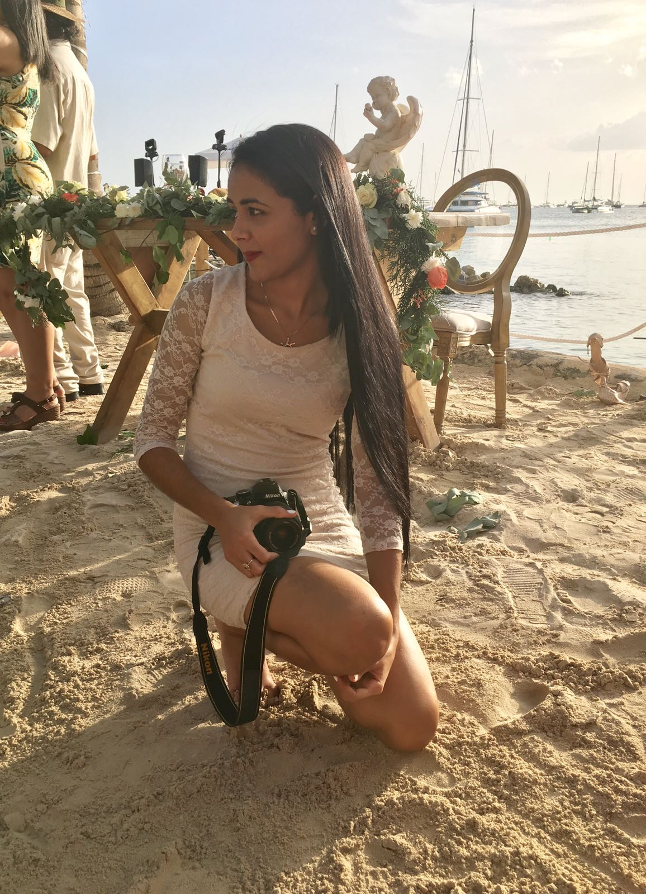

 Mi nombre es Elaine Guerrero, nací el 26 de septiembre del año 1997 en Santo Domingo.
Estudié 2 años la carrera de psicología en la PUCMM pero opté por abandonar la uni-
versidad,actualmente estudio comunicación visual en la Escuela de Chavón y aspiro a ser
una buena fotógrafa ya que es lo que me apasiona.